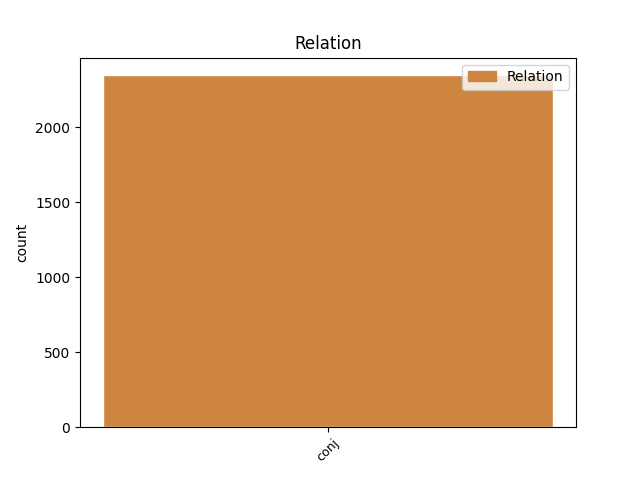
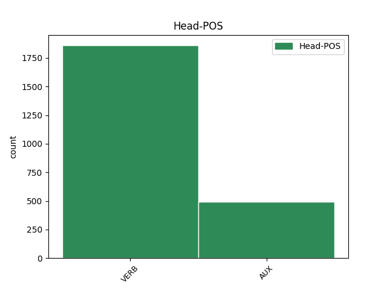
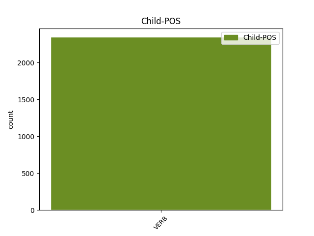

Distribution of features within this leaf



Agreement Rules sorted by frequency.
- When the dependent token is the conjunct(conj) of the head token, and the head token is VERB and the dependent token is VERB.
1 El _ _ _ _ 0 _ _ _
2 Gobierno _ _ _ _ 0 _ _ _
3 español _ _ _ _ 0 _ _ _
4 no _ _ _ _ 0 _ _ _
5 ha _ _ _ _ 0 _ _ _
6 tenido _ _ _ _ 0 _ _ _
7 más _ _ _ _ 0 _ _ _
8 remedio _ _ _ _ 0 _ _ _
9 que _ _ _ _ 0 _ _ _
10 rendir _ _ _ _ 0 _ _ _
11 se _ _ _ _ 0 _ _ _
12 a _ _ _ _ 0 _ _ _
13 la _ _ _ _ 0 _ _ _
14 evidencia _ _ _ _ 0 _ _ _
15 y _ _ _ _ 0 _ _ _
16 cancelar _ _ _ _ 0 _ _ _
17 la _ _ _ _ 0 _ _ _
18 batalla _ _ _ _ 0 _ _ _
19 que _ _ _ _ 0 _ _ _
20 le _ _ _ _ 0 _ _ _
21 enfrentaba _ _ _ _ 0 _ _ _
22 a _ _ _ _ 0 _ _ _
23 casi _ _ _ _ 0 _ _ _
24 todos _ _ _ _ 0 _ _ _
25 los _ _ _ _ 0 _ _ _
26 países _ _ _ _ 0 _ _ _
27 de _ _ _ _ 0 _ _ _
28 la _ _ _ _ 0 _ _ _
29 Unión _ _ _ _ 0 _ _ _
30 Europea _ _ _ _ 0 _ _ _
31 , _ _ _ _ 0 _ _ _
32 excepción _ _ _ _ 0 _ _ _
33 hecha _ _ _ _ 0 _ _ _
34 de _ _ _ _ 0 _ _ _
35 Grecia _ _ _ _ 0 _ _ _
36 y _ _ _ _ 0 _ _ _
37 Portugal _ _ _ _ 0 _ _ _
38 , _ _ _ _ 0 _ _ _
39 por _ _ _ _ 0 _ _ _
40 un _ _ _ _ 0 _ _ _
41 asunto _ _ _ _ 0 _ _ _
42 que _ _ _ _ 0 _ _ _
43 nadie _ _ _ _ 0 _ _ _
44 deseaba desear VERB VERB Mood=Ind|Number=Sing|Person=3|Tense=Imp|VerbForm=Fin 0 _ _ _
45 plantear _ _ _ _ 0 _ _ _
46 con _ _ _ _ 0 _ _ _
47 antelación _ _ _ _ 0 _ _ _
48 y _ _ _ _ 0 _ _ _
49 que _ _ _ _ 0 _ _ _
50 tampoco _ _ _ _ 0 _ _ _
51 se _ _ _ _ 0 _ _ _
52 sabía saber VERB VERB Mood=Ind|Number=Sing|Person=3|Tense=Imp|VerbForm=Fin 44 conj _ _
53 muy _ _ _ _ 0 _ _ _
54 bien _ _ _ _ 0 _ _ _
55 por _ _ _ _ 0 _ _ _
56 qué _ _ _ _ 0 _ _ _
57 habría _ _ _ _ 0 _ _ _
58 de _ _ _ _ 0 _ _ _
59 resolver _ _ _ _ 0 _ _ _
60 se _ _ _ _ 0 _ _ _
61 ahora _ _ _ _ 0 _ _ _
62 y _ _ _ _ 0 _ _ _
63 no _ _ _ _ 0 _ _ _
64 dentro _ _ _ _ 0 _ _ _
65 de _ _ _ _ 0 _ _ _
66 cuatro _ _ _ _ 0 _ _ _
67 años _ _ _ _ 0 _ _ _
68 . _ _ _ _ 0 _ _ _
1 Van _ _ _ _ 0 _ _ _
2 a _ _ _ _ 0 _ _ _
3 por _ _ _ _ 0 _ _ _
4 todas _ _ _ _ 0 _ _ _
5 : _ _ _ _ 0 _ _ _
6 un _ _ _ _ 0 _ _ _
7 día _ _ _ _ 0 _ _ _
8 el _ _ _ _ 0 _ _ _
9 ministro _ _ _ _ 0 _ _ _
10 del _ _ _ _ 0 _ _ _
11 ramo _ _ _ _ 0 _ _ _
12 , _ _ _ _ 0 _ _ _
13 Josep _ _ _ _ 0 _ _ _
14 Piqué _ _ _ _ 0 _ _ _
15 , _ _ _ _ 0 _ _ _
16 saluda _ _ _ _ 0 _ _ _
17 los _ _ _ _ 0 _ _ _
18 esfuerzos _ _ _ _ 0 _ _ _
19 del _ _ _ _ 0 _ _ _
20 Gobierno _ _ _ _ 0 _ _ _
21 argelino _ _ _ _ 0 _ _ _
22 en _ _ _ _ 0 _ _ _
23 el _ _ _ _ 0 _ _ _
24 respeto _ _ _ _ 0 _ _ _
25 a _ _ _ _ 0 _ _ _
26 los _ _ _ _ 0 _ _ _
27 derechos _ _ _ _ 0 _ _ _
28 humanos _ _ _ _ 0 _ _ _
29 y _ _ _ _ 0 _ _ _
30 la _ _ _ _ 0 _ _ _
31 democracia _ _ _ _ 0 _ _ _
32 : _ _ _ _ 0 _ _ _
33 lo _ _ _ _ 0 _ _ _
34 hace _ _ _ _ 0 _ _ _
35 oportunamente _ _ _ _ 0 _ _ _
36 , _ _ _ _ 0 _ _ _
37 cuando _ _ _ _ 0 _ _ _
38 tres _ _ _ _ 0 _ _ _
39 días _ _ _ _ 0 _ _ _
40 antes _ _ _ _ 0 _ _ _
41 el _ _ _ _ 0 _ _ _
42 Ejército _ _ _ _ 0 _ _ _
43 argelino _ _ _ _ 0 _ _ _
44 ha haber AUX AUX Mood=Ind|Number=Sing|Person=3|Tense=Pres|VerbForm=Fin 0 _ _ _
45 disparado _ _ _ _ 0 _ _ _
46 contra _ _ _ _ 0 _ _ _
47 una _ _ _ _ 0 _ _ _
48 manifestación _ _ _ _ 0 _ _ _
49 en _ _ _ _ 0 _ _ _
50 Tizi _ _ _ _ 0 _ _ _
51 Uzú _ _ _ _ 0 _ _ _
52 y _ _ _ _ 0 _ _ _
53 deja dejar VERB VERB Mood=Ind|Number=Sing|Person=3|Tense=Pres|VerbForm=Fin 44 conj _ _
54 un _ _ _ _ 0 _ _ _
55 balance _ _ _ _ 0 _ _ _
56 de _ _ _ _ 0 _ _ _
57 un _ _ _ _ 0 _ _ _
58 centenar _ _ _ _ 0 _ _ _
59 de _ _ _ _ 0 _ _ _
60 víctimas _ _ _ _ 0 _ _ _
61 mortales _ _ _ _ 0 _ _ _
62 . _ _ _ _ 0 _ _ _
Disagree Examples:
1 Las _ _ _ _ 0 _ _ _
2 reservas _ _ _ _ 0 _ _ _
3 de _ _ _ _ 0 _ _ _
4 oro _ _ _ _ 0 _ _ _
5 y _ _ _ _ 0 _ _ _
6 divisas _ _ _ _ 0 _ _ _
7 de _ _ _ _ 0 _ _ _
8 Rusia _ _ _ _ 0 _ _ _
9 subieron subir VERB VERB Mood=Ind|Number=Plur|Person=3|Tense=Past|VerbForm=Fin 0 _ _ _
10 800 _ _ _ _ 0 _ _ _
11 millones _ _ _ _ 0 _ _ _
12 de _ _ _ _ 0 _ _ _
13 dólares _ _ _ _ 0 _ _ _
14 y _ _ _ _ 0 _ _ _
15 el _ _ _ _ 0 _ _ _
16 26 _ _ _ _ 0 _ _ _
17 de _ _ _ _ 0 _ _ _
18 mayo _ _ _ _ 0 _ _ _
19 equivalían equivaler VERB VERB Mood=Ind|Number=Plur|Person=3|Tense=Imp|VerbForm=Fin 9 conj _ _
20 a _ _ _ _ 0 _ _ _
21 19.100 _ _ _ _ 0 _ _ _
22 millones _ _ _ _ 0 _ _ _
23 de _ _ _ _ 0 _ _ _
24 dólares _ _ _ _ 0 _ _ _
25 , _ _ _ _ 0 _ _ _
26 informó _ _ _ _ 0 _ _ _
27 hoy _ _ _ _ 0 _ _ _
28 un _ _ _ _ 0 _ _ _
29 comunicado _ _ _ _ 0 _ _ _
30 del _ _ _ _ 0 _ _ _
31 Banco _ _ _ _ 0 _ _ _
32 Central _ _ _ _ 0 _ _ _
33 . _ _ _ _ 0 _ _ _
1 La _ _ _ _ 0 _ _ _
2 firma _ _ _ _ 0 _ _ _
3 anunció _ _ _ _ 0 _ _ _
4 esta _ _ _ _ 0 _ _ _
5 semana _ _ _ _ 0 _ _ _
6 una _ _ _ _ 0 _ _ _
7 inversión _ _ _ _ 0 _ _ _
8 de _ _ _ _ 0 _ _ _
9 casi _ _ _ _ 0 _ _ _
10 1.200 _ _ _ _ 0 _ _ _
11 millones _ _ _ _ 0 _ _ _
12 de _ _ _ _ 0 _ _ _
13 dólares _ _ _ _ 0 _ _ _
14 para _ _ _ _ 0 _ _ _
15 aumentar _ _ _ _ 0 _ _ _
16 la _ _ _ _ 0 _ _ _
17 producción _ _ _ _ 0 _ _ _
18 del _ _ _ _ 0 _ _ _
19 chip _ _ _ _ 0 _ _ _
20 " _ _ _ _ 0 _ _ _
21 emotion _ _ _ _ 0 _ _ _
22 engine _ _ _ _ 0 _ _ _
23 " _ _ _ _ 0 _ _ _
24 , _ _ _ _ 0 _ _ _
25 componente _ _ _ _ 0 _ _ _
26 clave _ _ _ _ 0 _ _ _
27 de _ _ _ _ 0 _ _ _
28 PlayStation _ _ _ _ 0 _ _ _
29 2 _ _ _ _ 0 _ _ _
30 que _ _ _ _ 0 _ _ _
31 ofrece ofrecer VERB VERB Mood=Ind|Number=Sing|Person=3|Tense=Pres|VerbForm=Fin 0 _ _ _
32 una _ _ _ _ 0 _ _ _
33 alta _ _ _ _ 0 _ _ _
34 calidad _ _ _ _ 0 _ _ _
35 de _ _ _ _ 0 _ _ _
36 imagen _ _ _ _ 0 _ _ _
37 en _ _ _ _ 0 _ _ _
38 juegos _ _ _ _ 0 _ _ _
39 y _ _ _ _ 0 _ _ _
40 vídeos _ _ _ _ 0 _ _ _
41 y _ _ _ _ 0 _ _ _
42 que _ _ _ _ 0 _ _ _
43 Sony _ _ _ _ 0 _ _ _
44 desarrolló desarrollar VERB VERB Mood=Ind|Number=Sing|Person=3|Tense=Past|VerbForm=Fin 31 conj _ _
45 junto _ _ _ _ 0 _ _ _
46 a _ _ _ _ 0 _ _ _
47 Toshiba _ _ _ _ 0 _ _ _
48 . _ _ _ _ 0 _ _ _
1 Pese _ _ _ _ 0 _ _ _
2 al _ _ _ _ 0 _ _ _
3 aumento _ _ _ _ 0 _ _ _
4 del _ _ _ _ 0 _ _ _
5 total _ _ _ _ 0 _ _ _
6 de _ _ _ _ 0 _ _ _
7 contratos _ _ _ _ 0 _ _ _
8 , _ _ _ _ 0 _ _ _
9 los _ _ _ _ 0 _ _ _
10 de _ _ _ _ 0 _ _ _
11 carácter _ _ _ _ 0 _ _ _
12 fijo _ _ _ _ 0 _ _ _
13 han _ _ _ _ 0 _ _ _
14 sufrido _ _ _ _ 0 _ _ _
15 un _ _ _ _ 0 _ _ _
16 retroceso _ _ _ _ 0 _ _ _
17 en _ _ _ _ 0 _ _ _
18 comparación _ _ _ _ 0 _ _ _
19 con _ _ _ _ 0 _ _ _
20 mayo _ _ _ _ 0 _ _ _
21 de _ _ _ _ 0 _ _ _
22 1999 _ _ _ _ 0 _ _ _
23 , _ _ _ _ 0 _ _ _
24 cuando _ _ _ _ 0 _ _ _
25 se _ _ _ _ 0 _ _ _
26 firmaron _ _ _ _ 0 _ _ _
27 147.587 _ _ _ _ 0 _ _ _
28 , _ _ _ _ 0 _ _ _
29 lo _ _ _ _ 0 _ _ _
30 que _ _ _ _ 0 _ _ _
31 representó representar VERB VERB Mood=Ind|Number=Sing|Person=3|Tense=Past|VerbForm=Fin 0 _ _ _
32 el _ _ _ _ 0 _ _ _
33 13,07 _ _ _ _ 0 _ _ _
34 por _ _ _ _ 0 _ _ _
35 ciento _ _ _ _ 0 _ _ _
36 del _ _ _ _ 0 _ _ _
37 total _ _ _ _ 0 _ _ _
38 y _ _ _ _ 0 _ _ _
39 significa significar VERB VERB Mood=Ind|Number=Sing|Person=3|Tense=Pres|VerbForm=Fin 31 conj _ _
40 que _ _ _ _ 0 _ _ _
41 la _ _ _ _ 0 _ _ _
42 temporalidad _ _ _ _ 0 _ _ _
43 ha _ _ _ _ 0 _ _ _
44 crecido _ _ _ _ 0 _ _ _
45 . _ _ _ _ 0 _ _ _
1 María _ _ _ _ 0 _ _ _
2 Antonia _ _ _ _ 0 _ _ _
3 Lucena _ _ _ _ 0 _ _ _
4 nació nacer VERB VERB Mood=Ind|Number=Sing|Person=3|Tense=Past|VerbForm=Fin 0 _ _ _
5 el _ _ _ _ 0 _ _ _
6 24 _ _ _ _ 0 _ _ _
7 de _ _ _ _ 0 _ _ _
8 diciembre _ _ _ _ 0 _ _ _
9 de _ _ _ _ 0 _ _ _
10 1948 _ _ _ _ 0 _ _ _
11 en _ _ _ _ 0 _ _ _
12 Málaga _ _ _ _ 0 _ _ _
13 , _ _ _ _ 0 _ _ _
14 está _ _ _ _ 0 _ _ _
15 casada _ _ _ _ 0 _ _ _
16 , _ _ _ _ 0 _ _ _
17 tiene _ _ _ _ 0 _ _ _
18 dos _ _ _ _ 0 _ _ _
19 hijos _ _ _ _ 0 _ _ _
20 , _ _ _ _ 0 _ _ _
21 es _ _ _ _ 0 _ _ _
22 licenciada _ _ _ _ 0 _ _ _
23 en _ _ _ _ 0 _ _ _
24 Ciencias _ _ _ _ 0 _ _ _
25 Políticas _ _ _ _ 0 _ _ _
26 por _ _ _ _ 0 _ _ _
27 la _ _ _ _ 0 _ _ _
28 Universidad _ _ _ _ 0 _ _ _
29 Complutense _ _ _ _ 0 _ _ _
30 de _ _ _ _ 0 _ _ _
31 Madrid _ _ _ _ 0 _ _ _
32 y _ _ _ _ 0 _ _ _
33 pertenece pertenecer VERB VERB Mood=Ind|Number=Sing|Person=3|Tense=Pres|VerbForm=Fin 4 conj _ _
34 al _ _ _ _ 0 _ _ _
35 Cuerpo _ _ _ _ 0 _ _ _
36 Técnico _ _ _ _ 0 _ _ _
37 Superior _ _ _ _ 0 _ _ _
38 de _ _ _ _ 0 _ _ _
39 la _ _ _ _ 0 _ _ _
40 Administración _ _ _ _ 0 _ _ _
41 de _ _ _ _ 0 _ _ _
42 la _ _ _ _ 0 _ _ _
43 Seguridad _ _ _ _ 0 _ _ _
44 Social _ _ _ _ 0 _ _ _
45 . _ _ _ _ 0 _ _ _
1 Navidul _ _ _ _ 0 _ _ _
2 , _ _ _ _ 0 _ _ _
3 que _ _ _ _ 0 _ _ _
4 en _ _ _ _ 0 _ _ _
5 1995 _ _ _ _ 0 _ _ _
6 adquirió adquirir VERB VERB Mood=Ind|Number=Sing|Person=3|Tense=Past|VerbForm=Fin 0 _ _ _
7 Industrias _ _ _ _ 0 _ _ _
8 Revilla _ _ _ _ 0 _ _ _
9 y _ _ _ _ 0 _ _ _
10 lidera liderar VERB VERB Mood=Ind|Number=Sing|Person=3|Tense=Pres|VerbForm=Fin 6 conj _ _
11 el _ _ _ _ 0 _ _ _
12 mercado _ _ _ _ 0 _ _ _
13 del _ _ _ _ 0 _ _ _
14 jamón _ _ _ _ 0 _ _ _
15 curado _ _ _ _ 0 _ _ _
16 , _ _ _ _ 0 _ _ _
17 exportó _ _ _ _ 0 _ _ _
18 durante _ _ _ _ 0 _ _ _
19 1999 _ _ _ _ 0 _ _ _
20 por _ _ _ _ 0 _ _ _
21 valor _ _ _ _ 0 _ _ _
22 de _ _ _ _ 0 _ _ _
23 3.050 _ _ _ _ 0 _ _ _
24 millones _ _ _ _ 0 _ _ _
25 de _ _ _ _ 0 _ _ _
26 pesetas _ _ _ _ 0 _ _ _
27 ( _ _ _ _ 0 _ _ _
28 18,3 _ _ _ _ 0 _ _ _
29 millones _ _ _ _ 0 _ _ _
30 de _ _ _ _ 0 _ _ _
31 euros _ _ _ _ 0 _ _ _
32 ) _ _ _ _ 0 _ _ _
33 , _ _ _ _ 0 _ _ _
34 un _ _ _ _ 0 _ _ _
35 10,8 _ _ _ _ 0 _ _ _
36 por _ _ _ _ 0 _ _ _
37 ciento _ _ _ _ 0 _ _ _
38 más _ _ _ _ 0 _ _ _
39 que _ _ _ _ 0 _ _ _
40 un _ _ _ _ 0 _ _ _
41 año _ _ _ _ 0 _ _ _
42 antes _ _ _ _ 0 _ _ _
43 . _ _ _ _ 0 _ _ _